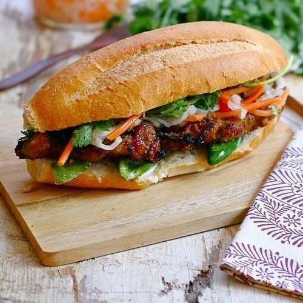

BANH MI

INGREDIENTS
- 1 lb. pork tenderloin, thinly sliced
- 2 cloves of garlic, minced
- 1 tbsp. fish sauce
- 1 tbsp. soy sauce
- 1 tbsp. sugar
- 1/4 tsp. black pepper
- 1/4 cup vegetable oil
- 4-6 French baguettes
- Mayonnaise, for spreading on bread
- Cucumber, thinly sliced
- Carrots, shredded
- Cilantro leaves
- Red chili pepper, thinly sliced
INSTRUCTIONS
- In a large bowl, marinate the sliced pork with garlic, fish sauce, soy sauce, sugar, black pepper, and vegetable oil. Cover and refrigerate for at least 30 minutes or up to overnight.
- Preheat a grill or grill pan to high heat. Grill the marinated pork slices for 2-3 minutes per side until cooked through and slightly charred.
- Cut the French baguettes in half lengthwise and spread mayonnaise on each half.
- Arrange the grilled pork slices on the bottom half of the bread.
- Top with sliced cucumber, shredded carrots, cilantro leaves, and sliced red chili pepper.
- Close the sandwich and serve immediately.